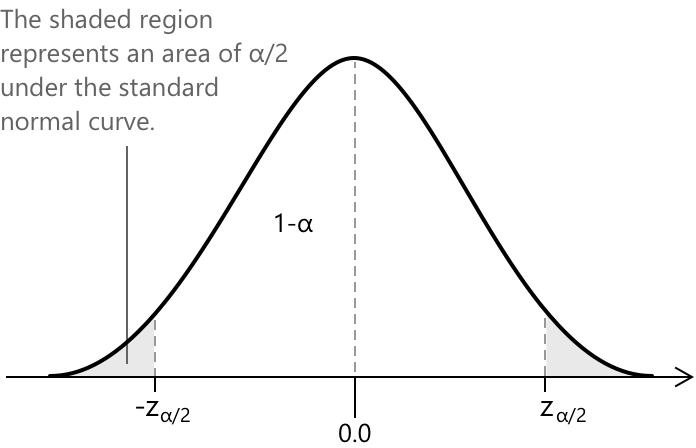

Довірчі інтервали
Точкове оцінювання
Коли ми покладаємося на вибірку, щоб дізнатися щось про невідомий параметр сукупності, наприклад, середнє \( \mu \), природним першим кроком є використання точкової оцінки. На практиці це означає вибір статистики \( \hat{\theta} \), обчисленої за даними, і сподівання, що вона розумним чином відображає значення параметра, який ми намагаємося оцінити. Властивістю хорошої оцінки є несміщеність: в середньому, по всіх можливих вибірках, які ми могли б отримати, оцінка має влучати в правильну ціль. Формально ця вимога записується так: \[ \mu_{\hat{\theta}} = E(\hat{\theta}) = \theta \] що означає, що вибірковий розподіл \( \hat{\theta} \) центрований точно у значенні істинного параметра.
Звичайно, центрованість навколо правильного значення не означає, що кожна окрема оцінка буде ідеальною. Кожна вибірка має свою варіативність, і це неминуче поширюється на оцінку. Ступінь цього коливання описується вибірковою дисперсією
\[
\operatorname{Var}(\hat{\theta})
\]
яка кількісно визначає, наскільки оцінка має тенденцію змінюватися від однієї вибірки до іншої. Наприклад, при оцінюванні середнього значення сукупності, вибіркове середнє \( \bar{X} \) має такі властивості
\[
E(\bar{X})=\mu \quad
\operatorname{Var}(\bar{X})=\frac{\sigma^{2}}{n}
\]
отже, його точність природно зростає зі збільшенням обсягу вибірки \( n \). Природним наслідком цієї варіативності є те, що будь-яка точкова оцінка зазвичай буде відрізнятися від істинного параметра на певну величину. Ця різниця часто називається похибкою оцінювання, і її можна формально записати як
\[
\delta = \hat{\theta} – \theta
\]
Оскільки різні вибірки призводять до різних значень \( \hat{\theta} \), похибка оцінювання сама по собі є випадковою величиною. Хоча ми не можемо усунути цю похибку \(\delta\), ми можемо вивчити її поведінку, кількісно визначити, наскільки великою вона може бути, і розробляти оцінки, варіативність яких була б якомога меншою.
Попри це, залишається досить малоймовірним, що конкретне значення \( \hat{\theta} \), отримане з однієї вибірки, точно збіжиться з істинним параметром. Кожна вибірка — це лише один із багатьох можливих «зрізів» сукупності, кожен з яких має свої особливості та випадковість. Ця неминуча варіація від вибірки до вибірки є саме тією причиною, чому статистики часто виходять за межі точкових оцінок. Щоб передати невизначеність більш достовірно та прозоро, стає необхідним доповнити будь-яку точкову оцінку проміжком правдоподібних значень — цей принцип лежить в основі довірчих інтервалів.
Усі ці міркування відбуваються в рамках вибіркових розподілів. Різні вибірки, отримані з однієї сукупності, можуть давати різні результати, і дослідження розподілу статистики по всіх таких вибірках допомагає нам зрозуміти її варіативність та невизначеність, пов'язану з виведенням параметрів сукупності з даних вибірки.
Інтервальна оцінка
Оскільки точкова оцінка майже ніколи не збігається точно зі справжнім значенням параметра генеральної сукупності, часто більш доцільно вказувати діапазон значень, у який, ймовірно, потрапляє цей параметр. Це приводить до ідеї інтервальної оцінки. Інтуїція проста: замість того, щоб обмежуватися одним числом, ми використовуємо інформацію у вибірці для побудови двох меж, що обрамляють параметр. У символічній формі ми запишемо
\[
\hat{\theta}_{L} < \theta < \hat{\theta}_{U}
\]
де \( \hat{\theta}_{L} \) та \( \hat{\theta}_{U} \) представляють нижню та верхню межі, отримані з даних. Таким чином, оцінка визнає невизначеність, притаманну вибірці, і надає реалістичний діапазон правдоподібних значень для параметра генеральної сукупності, такого як середнє \( \mu \). Інтервал також можна інтерпретувати як визначення меж похибки оцінки: відхилення \( \delta = \hat{\theta} - \theta \) обмежене нижньою та верхньою межами, що гарантує, що похибка не може перевищувати заданий діапазон.
Щоб зробити цю ідею точнішою, варто пам'ятати, що сам інтервал будується на основі вибірки. Це означає, що його кінці, \( \hat{\theta}_{L} \) та \( \hat{\theta}_{U} \), змінюються від однієї вибірки до іншої — так само як і будь-яка статистика. Як результат, інтервал не є фіксованим, і щоразу, коли ми отримуємо нову вибірку, ми отримуємо дещо іншу пару меж.
Ми можемо розглянути ймовірність того, що інтервал, побудований за вибіркою, міститиме справжній параметр \( \theta \). Ця ймовірність називається рівнем довіри, і вона записується як: \[ P\!\left( \hat{\theta}_{L} < \theta < \hat{\theta}_{U} \right) = 1 - \alpha \] Простіше кажучи, якби ми повторили процес вибірки багато разів, приблизно частина \( 1 – \alpha \) обчислених нами інтервалів успішно охопила б фактичне значення параметра. Підсумовуючи:
- Інтервал \(\hat{\theta}_{L} < \theta < \hat{\theta}_{U}\) визначає \(100(1-\alpha)%\) довірчий інтервал.
- Величина \(1 - \alpha\) є рівнем довіри.
- Межі \( \hat{\theta}_{L} \) та \( \hat{\theta}_{U} \) є нижньою та верхньою довірчими межами.
На практиці значення \( \alpha \) часто обирають так, щоб рівень довіри \( 1 - \alpha \) знаходився в межах від 95% до 99%. Ці рівні забезпечують баланс між інтервалом, який є достатньо вузьким, щоб бути інформативним, і достатньо широким, щоб охопити справжній параметр з високою ймовірністю. Оскільки рівень довіри зростає, інтервал обов'язково розширюється, що відображає той факт, що ширший діапазон дає більше шансів на міщення невідомого параметра.
Інтервальна оцінка середнього при відомому \(\sigma\)
Розглянемо задачу оцінки середнього значення генеральної сукупності шляхом побудови інтервалу з однієї вибірки, взятої з нормально розподіленої сукупності з відомим \(sigma\). У цьому випадку довірчий інтервал для середнього \( \mu \) можна отримати, використовуючи Центральну граничну теорему та той факт, що стандартизоване середнє вибірки має стандартний нормальний розподіл. Ці результати описують поведінку розподілу вибірок \( \bar{X} \) і дозволяють кількісно визначити невизначеність, пов'язану з оцінкою.
Для побудови довірчого інтервалу введемо стандартизовану змінну
\[
Z = \frac{\bar{X} - \mu}{\sigma / \sqrt{n}}
\]
яка має стандартний нормальний розподіл, коли дисперсія сукупності \( \sigma^{2} \) відома. Використовуючи цю змінну, ми будуємо інтервал, що охоплює центральну частину розподілу:
\[ P\!\left( -z_{\alpha/2} < Z < z_{\alpha/2} \right) = 1 – \alpha \]
де \( z_{\alpha/2} \) — це критичне значення, таке що площа у двох «хвостах» стандартної нормальної кривої дорівнює \( \alpha \), і кожен «хвіст» окремо становить \( \alpha/2 \). Іншими словами, \( z_{\alpha/2} \) обирається так, щоб площа праворуч від нього під стандартною нормальною щільністю дорівнювала рівно \( \alpha/2 \).

Щоб знайти середнє значення генеральної сукупності \( \mu \), ми підставимо вираз для \( Z \) у вищезазначену умову ймовірності, отримавши:
\[ P\!\left( -z_{\alpha/2} < \frac{\bar{X} – \mu}{\sigma / \sqrt{n}} < z_{\alpha/2} \right) = 1 - \alpha \]
Виділивши параметр \( \mu \) у нерівності, ми отримаємо вираз, який безпосередньо описує проміжок правдоподібних значень для середнього значення генеральної сукупності. Розв'язання відносно \( \mu \) дає:
\[ P!\left( \bar{X} – z_{\alpha/2},\frac{\sigma}{\sqrt{n}} \;<\; \mu \;<\; \bar{X} + z_{\alpha/2}\,\frac{\sigma}{\sqrt{n}} \right) = 1 – \alpha \]
що представляє \( 100(1-\alpha)% \) довірчий інтервал для середнього.
Довірчий інтервал з рівнем \(100(1-\alpha)%\) надає кількісну міру надійності точкової оцінки. Якби істинне середнє \( \mu \) знаходилося точно в середині інтервалу, тоді \( \bar{X} \) збігалося б з \( \mu \), і жодної похибки оцінювання не виникло б. Однак, зазвичай вибіркове середнє не буде ідеально збігатися із середнім генеральної сукупності, і отримана оцінка неминуче відхилятиметься від істинного значення.
Це відхилення можна описати через абсолютну різницю \( |\bar{X} - \mu| \), і з ймовірністю \( 1-\alpha \) похибка обмежена зверху значенням: \[ z_{\alpha/2}\,\frac{\sigma}{\sqrt{n}} \]
Поширеною помилкою є думка, що 95% довірчий інтервал означає, що існує 95% ймовірність того, що \( \mu \) знаходиться всередині цього інтервалу. Це неправильна інтерпретація. Істинне значення \( \mu \) є сталою, воно не рухається, і до нього не прив'язана жодна ймовірність. Те, що насправді змінюється від вибірки до вибірки, — це сам інтервал.
Якби ми зібрали багато вибірок і щоразу будували новий інтервал, приблизно 95% цих інтервалів включали б істинне середнє. Таким чином, 95% стосується того, наскільки добре метод працює в довгостроковій перспективі, а не ймовірності того, що \( \mu \) лежить у конкретному інтервалі, який ми отримали з однієї вибірки.
Обсяг вибірки
Одним із практичних питань, що часто виникає при роботі з інтервальною оцінкою, є те, наскільки великою має бути вибірка, щоб похибка оцінювання залишалася нижче обраного порогу \( \delta \). Іншими словами, ми хочемо отримати такий обсяг вибірки, який дозволить нам бути впевненими на рівні \(100(1-\alpha)%\), що різниця між вибірковим середнім і істинним середнім генеральної сукупності не перевищить \( \delta \).
Ця формула застосовується конкретно до випадку, коли відоме стандартне відхилення генеральної сукупності \( \sigma \). За цього припущення мінімальний необхідний обсяг вибірки становить:
\[ n = \left( \frac{z_{\alpha/2}\,\sigma}{\delta} \right)^{2} \]
Приклад
Компанія тестує термін служби акумулятора нової моделі смартфона. За вибірки з 25 телефонів зафіксована середня тривалість роботи акумулятора становить \(\bar{x} = 11.8\) годин. Припустимо, що попередні дослідження вказують на відоме стандартне відхилення генеральної сукупності \(\sigma = 1.5\) години.
- Обчислити 95% довірчий інтервал для істинного середнього терміну служби акумулятора \( \mu \).
- Визначити, наскільки великою має бути вибірка, щоб із 95% впевненістю гарантувати, що похибка оцінювання не перевищить \( \delta = 0.20 \) години.
Ми маємо справу зі стандартним прикладом, у якому завданням є визначення довірчого інтервалу для вибірки, взятої з генеральної сукупності з відомою дисперсією. Оскільки стандартне відхилення генеральної сукупності \( \sigma \) відоме, ми використовуємо стандартний нормальний розподіл. Для 95% рівня довіри критичне значення становить:
\[ z_{0.025} = 1.96 \]
Значення \(1.96\) отримано з таблиці стандартного нормального розподілу Z.
Щоб побудувати інтервал, ми спочатку обчислимо стандартну помилку вибіркового середнього, яка показує, наскільки \( \bar{X} \) очікувано змінюється від вибірки до вибірки. Використовуючи відоме стандартне відхилення генеральної сукупності, ми отримаємо: \[ \frac{\sigma}{\sqrt{n}} = \frac{1.5}{\sqrt{25}} = \frac{1.5}{5} = 0.30 \]
Далі ми визначимо межу похибки, помноживши стандартну помилку на критичне значення \( z_{0.025} = 1.96 \): \[ 1.96 \times 0.30 = 0.588 \]
Це дає напівширину довірчого інтервалу. Отже, 95% довірчий інтервал для середнього значення генеральної сукупності \( \mu \) становить \(11.8 \pm 0.588\), що відповідає проміжку \((11.212,\; 12.388)\).
Використовуючи стандартну формулу для обсягу вибірки, коли стандартне відхилення генеральної сукупності відоме, запишемо: \[ n = \left( \frac{z_{\alpha/2},\sigma}{\delta} \right)^{2} \]
Тепер підставимо числові значення у вираз: \[ n = \left( \frac{1.96 \times 1.5}{0.20} \right)^{2} = \left( \frac{2.94}{0.20} \right)^{2} = 216.09 \]
Оскільки обсяг вибірки має бути цілим числом і ми завжди округляємо в більшу сторону, щоб зберегти бажаний рівень довіри, необхідний обсяг вибірки становить \( n = 217 \).
Підсумовуючи, ми отримаємо два результати:
- 95% довірчий інтервал для середнього значення \((11.212,\; 12.388)\).
- Необхідний обсяг вибірки для похибки \( \delta = 0.20 \) становить \(n = 217\).